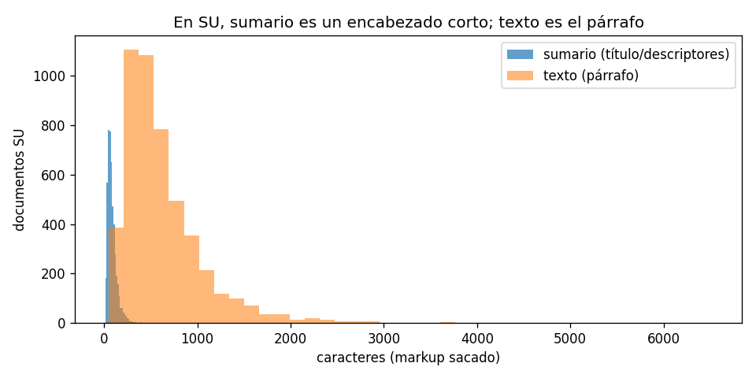
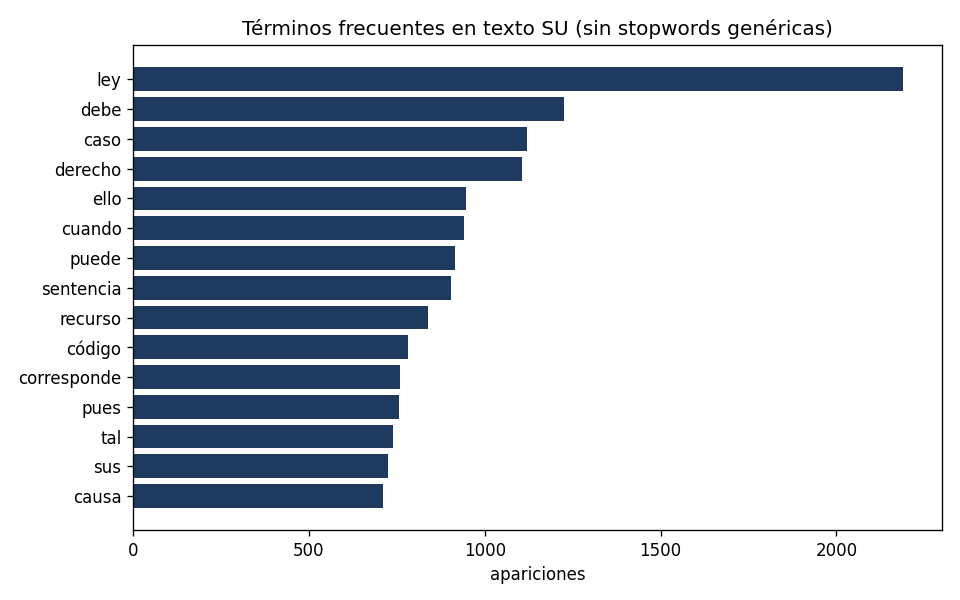
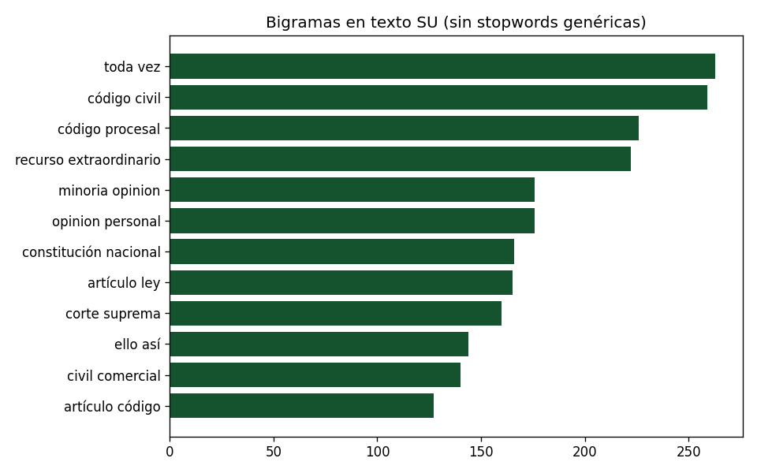
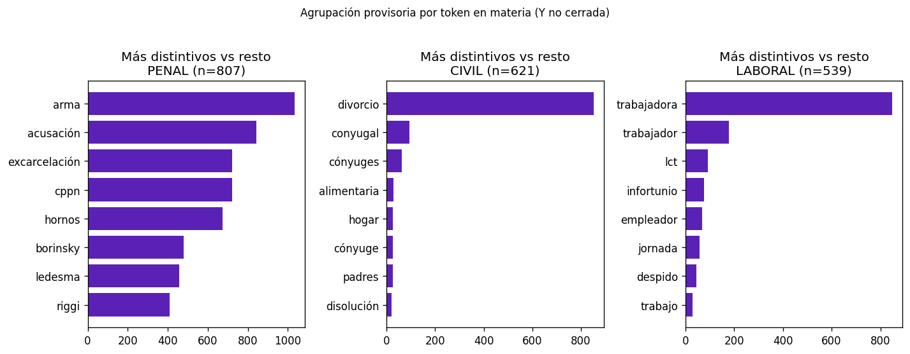

P1 — Defensa
Consigna → respuesta → por qué → cómo probarlo en código → qué no prueba. Lab: p1_eda.ipynb. Entrega: ENTREGA.html. Validación vs corpus: 8.7k vs 874k (estructura igual; cola de materia no).
Corrés el setup una vez. Después cada tarjeta asume work. Ruta desde practicos/P1/. El bloque violeta: primero la teoría aplicada a este corpus, después el capítulo general. Los links de Pages (jnzader.github.io) se ven en el browser. Los .md locales, si Chrome los deja en blanco, abrilos en el editor — no es que se haya roto esta página.
0. Setup (todas las pruebas)
from pathlib import Path
import json, re
import numpy as np
import pandas as pd
SAMPLE = Path("../../datos/dataset_sample.jsonl.gz")
df = pd.read_json(SAMPLE, lines=True, compression="gzip")
def dump(v):
if isinstance(v, (dict, list)):
return json.dumps(v, ensure_ascii=False)
return str(v)
def nonempty(s):
if s.dtype == object:
return s.notna() & s.map(lambda v: v not in ("", {}, []))
return s.notna()
dummy = df["descriptores"].map(dump).str.contains(
"Término elegido para describir", na=False
)
work = df.loc[~dummy].copy()
print(len(df), "filas crudas;", len(work), "después de sacar plantilla")
guid que empieza con 123456789 te quedás en cero: en esta muestra todos los guid están anonimizados así.1. ¿Qué información hay? ¿Qué se puede preguntar?
SU), fallos (FA), novedades (NV), más ~1.000 plantillas. No es una única unidad “fallo”.guid único pero anonimizado.En EDA lo primero no es un gráfico: es preguntar qué es una fila. La unidad de análisis es el objeto que estás dispuesto a contar, promediar o etiquetar. Si mezclás objetos distintos, todos los números de abajo quedan podridos aunque el código corra.
En este JSONL una fila no es “un fallo argentino”. El prefijo de id-infojus parte el archivo: SU (4.851) trae materia y sumario; FA (2.859) trae tribunal y cero materia; NV (3) parece novedad. Además hay 1.035 filas de plantilla. guid es único, pero está anonimizado: no demuestra “un caso judicial = un guid”.
Analogía: es como juntar en una planilla personas, facturas y tuits y preguntar “edad promedio”. El error típico es hacer value_counts de materia sobre las 8.748 filas y titulear “fueros del dataset”. Primero se parte; después se describe. Las únicas preguntas honestas hoy son sobre esta muestra y, adentro, sobre este tipo de registro.
- AVD 01 EDA y tipos
- AVD 00 pandas
- Guía SAIJ Materia 1
print(df.shape) # (8748, 71)
print("plantilla", int(dummy.sum()), "trabajo", len(work))
print("guid únicos", work["guid"].nunique(), "de", len(work))
print("guid anonimizado",
float(df["guid"].astype(str).str.startswith("123456789").mean()))
ids = work["id-infojus"].dropna().astype(str)
print(ids.str.slice(0, 2).value_counts())
# cobertura de campos por prefijo → no son la misma unidad
work["id_prefix"] = work["id-infojus"].astype(str).str.slice(0, 2)
cols = ["materia", "sumario", "texto", "tribunal", "tipo-tribunal", "titulo_noticia"]
rows = []
for pref, g in work.groupby("id_prefix"):
rec = {"prefix": pref, "n": len(g)}
for c in cols:
rec[c] = float(nonempty(g[c]).mean())
rows.append(rec)
pd.DataFrame(rows).sort_values("n", ascending=False)
2. Distribución de fueros y tribunales
fuero. materia solo en SU. tipo-tribunal son 139 códigos, no un fuero.materia (62,9 %), 282 valores. Top PROCESAL/PENAL/LABORAL/CIVIL. CS 2.877, CC 1.048.Hay dos “tipos” que la gente confunde. El tipo de la computadora (string, int) dice cómo se guarda. El tipo estadístico dice qué operaciones tienen sentido. tipo-tribunal es string, pero no es un texto libre para promediar: es categórica de alta cardinalidad (139 códigos). La media de CS no existe. Se describe con conteos, moda, cola.
materia tampoco es “el fuero”. Son 282 etiquetas de redacción humana: PROCESAL (un tipo de acto), PENAL (una rama), CIVIL - COMERCIAL y CIVIL-COMERCIAL (la misma combo con otro separador). Solo aparece en SU (62,9 % de las filas de trabajo). Preguntar “distribución de fueros” sobre FA es preguntarle el color a una foto en blanco y negro.
Error típico: “pandas dice object, entonces es texto y lo tokenizo” o “CS será Corte Suprema, listo”. Un código hay que documentarlo. Hasta entonces CS es “el código más frecuente (2.877)”, no un fuero.
- AVD 03 descriptiva
- AVD 01 tipos
- Guía SAIJ Materia 1
print("¿existe columna fuero?", "fuero" in work.columns)
mat = work["materia"].dropna().astype(str)
print("materia no nula", len(mat), f"({len(mat)/len(work):.1%})")
print("únicos", mat.nunique())
print(mat.value_counts().head(15))
print("tipo-tribunal únicos", work["tipo-tribunal"].nunique())
print(work["tipo-tribunal"].value_counts(dropna=False).head(12))
# FA no tienen materia:
print("materia% por prefijo")
print(work.groupby("id_prefix")["materia"].apply(lambda s: s.notna().mean()))
3. Valores faltantes
Un faltante no es “un hueco feo”. La pregunta es por qué falta. MCAR: al azar (se perdió un bit). MAR: depende de otra variable observada (faltan más sumarios en un año). MNAR: depende de lo que no ves. Y hay una cuarta que en este corpus manda: estructural — ese campo no forma parte de ese tipo de registro.
Los FA tienen tribunal ~100 % y sumario 0 %. No “olvidaron” el sumario: el esquema FA no lo trae. Es como quejarse de que una factura no tiene DNI. Imputar materia en FA sería inventar fueros. Las columnas siempre vacías (disidencia, etc.) y las de noticia/norma (3 filas) son otro formulario pegado al mismo JSONL, no “el fallo incompleto”.
Los anidados (descriptores, jurisdiccion) tampoco se cuentan como un string vacío. Un dict no es NA. Error típico: fillna('desconocido') en todo y seguir. Curar es decidir con propósito, no tapar huecos.
- EyCD 02 faltantes (MCAR/MAR/MNAR)
- AVD 07 limpieza
- EyCD 01 curación
- Guía SAIJ Materia 2
n_nonnull = work.apply(nonempty).sum(axis=1)
print("min/mediana/max no nulos",
int(n_nonnull.min()), int(n_nonnull.median()), int(n_nonnull.max()))
print("siempre vacías:",
[c for c in work.columns if work[c].isna().all()])
# anidados: no contarlos como string
for c in ["descriptores", "jurisdiccion"]:
print(c, work[c].map(type).value_counts().to_dict())
# estructural vs aleatorio = cobertura por prefijo (misma tabla del §1)
materia en FA.4. Desbalance de clases
materia y en provincia (CABA+PBA). Accuracy mentiría.Desbalance quiere decir que las clases (o los grupos) no tienen el mismo peso. No es un bug: es el mundo. El problema es la métrica y el sesgo que el modelo puede memorizar.
En SU, PROCESAL y PENAL pesan mucho; hay colas de 20–30 filas. Un clasificador que siempre diga la clase mayoritaria puede tener accuracy “linda” y no haber leído un sumario. Por eso en P3 no vamos a usar accuracy como estrella: hace falta F1 por clase (CIVIL vs COMERCIAL se van a pelear).
Hay un segundo desbalance, geográfico: CABA 3.591, PBA 1.337, después un salto. Un modelo con provincia como feature puede “acertar fuero” porque en CABA hay más de cierto fuero, no porque entendió el texto. La descriptiva obliga a ver top y cola, no solo la moda. Error típico: “está desbalanceado, entonces borro las clases chicas”. A veces las chicas son las que importan.
- AVD 03 descriptiva
- EyCD 03 sesgo
- IAA Materia 3 (métricas en P3)
vc = mat.value_counts()
print(vc.head(10))
print("share top 5", vc.head(5).sum() / vc.sum())
print(work["provincia"].value_counts().head(8))
# desbalance grosero:
print("ratio max/min (materias con n>=20)",
vc[vc >= 20].max() / vc[vc >= 20].min())
5. Evolución temporal y sesgo temporal
fecha = candidato judicial (a veces varias, con |). timestamp en ms ≈ carga (~2012). Mismo año solo 12,4 %.Una fecha no es un float. Es un reloj atado a un evento. “Fecha de qué”: del fallo, de la carga, de la modificación, del newsletter. Si mezclás relojes, la serie temporal cuenta otra película.
Acá fecha parece el documento (rango ~1865–2026) y a veces trae varias fechas en un string con | (166 filas): ni siquiera es un solo instante. timestamp está en milisegundos y, convertido, vive ~2012–2026: calza con “alta en un sistema informático”, no con “se dictó el fallo en 1996”. En 6.606 filas con ambos, solo el 12,4 % comparte el año; el documento es anterior al timestamp en todas. Eso es evidencia de dos relojes, no de un bug de parseo.
Error típico: un line plot de timestamp titulado “fallos por año”. Estás midiendo digitalización/carga. Otro: parsear | tomando la primera fecha sin decir que era un atajo. Para “actividad judicial” el candidato es fecha (con sus suciedades). Para “cuándo entró al SAIJ”, timestamp.
- AVD 01 EDA (semántica de la variable)
- EyCD 03 sesgo
- Guía SAIJ Materia 1
print("fecha con |", int(work["fecha"].astype(str).str.contains(r"\|", na=False).sum()))
work["fecha_str"] = work["fecha"].map(lambda v: None if pd.isna(v) else str(v))
work["fecha_primera"] = pd.to_datetime(
work["fecha_str"].map(lambda s: s.split("|")[0] if isinstance(s, str) else None),
errors="coerce",
)
print(work["fecha_primera"].min(), work["fecha_primera"].max())
ts = pd.to_numeric(work["timestamp"], errors="coerce")
ts = ts.mask(ts <= 0) # pandas a veces mete el min de int64
work["ts_dt"] = pd.to_datetime(ts, unit="ms", errors="coerce", utc=True)
print(work["ts_dt"].min(), work["ts_dt"].max())
cmp = work.dropna(subset=["fecha_primera", "ts_dt"]).copy()
doc = cmp["fecha_primera"]
if getattr(doc.dt, "tz", None) is None:
doc = doc.dt.tz_localize("UTC")
print("ambos relojes", len(cmp))
print("mismo año", float((doc.dt.year == cmp["ts_dt"].dt.year).mean()))
print("doc < timestamp", int((doc < cmp["ts_dt"]).sum()))
6. Áreas más/menos representadas
Cobertura ≠ población. Lo que ves en la muestra es lo que el recorte dejó pasar, no “el derecho argentino”. SAIJ indexa con sesgos (qué tribunales cargan, qué años se digitalizaron, qué materias se resumen). Encima nosotros estamos en una muestra de ~8.7k, no en los 874k.
Que PROCESAL y PENAL lideren materia en SU no prueba que el país litigue eso. Prueba qué etiquetas hay acá. Córdoba chica en esta muestra no es “poca actividad cordobesa”: puede ser subcarga, filtro del sample, o las dos. Lo mismo CABA inflada.
Error típico: “el área menos representada hay que dropearla porque no hay n”. A veces es la que el mentor quiere que discutas. Otro: extrapolar al país. La frase honesta es “en esta muestra, bajo este esquema SU…”.
- EyCD 03 sesgo
- AVD 03 descriptiva
print(mat.value_counts().head(20))
print(mat.value_counts().tail(10)) # cola
print(work["provincia"].value_counts())
print("Córdoba", int((work["provincia"] == "Córdoba").sum()))
7. Tribunales sobrerrepresentados
CS ~2.877 vs CC ~1.048. instancia sucia.S S S S en instancia.Sobrerrepresentación = un nivel de una categórica se come el conteo. CS ~2.877 vs CC ~1.048, y después una cola de 139 códigos. Eso no es “el fuero CS”: es un código institucional frecuente. instancia encima está sucia (S S S S): basura de carga, no una jerarquía jurídica limpia.
Por qué importa para más adelante: si el target es fuero y metés tribunal o provincia como feature, el modelo puede aprender la organigrama (“esta cámara hace civil”) en vez del sumario. Eso se llama leakage por proxy: una X que ya conoce Y por canal administrativo. El README pide predecir leyendo el sumario. Tribunal puede ser diagnóstico en P1; como feature en P3 es sospechoso.
Error típico: borrar los tribunales chicos “para limpiar”. Estás tirando las clases raras y sesgando más. Otro: decodificar CS = Corte Suprema de memoria, sin evidencia en el archivo.
- AVD 03 descriptiva
- EyCD 03 sesgo
- EyCD 05 transformaciones / leakage
tt = work["tipo-tribunal"].value_counts(dropna=False)
print(tt.head(15))
print("n únicos", tt.shape[0], "share CS", tt.iloc[0] / tt.sum())
print(work["instancia"].value_counts(dropna=False).head(12))
8. Variable objetivo (target)
materia en SU. Mezcla PENAL con PROCESAL, combos, y 891 sin token de fuero. FA no tienen materia.Supervisado = aprender una regla Y a partir de X, con ejemplos. Antes del modelo hay que clavar tres cosas: qué es Y, qué puede ser X, y qué sería hacer trampa (leakage). El README ya las dice: Y = fuero/rama, X = el sumario, trampa = usar metadatos que ya son el fuero.
materia no es Y lista. Es una etiqueta sucia: mezcla ramas (PENAL) con tipos de acto (PROCESAL), combos (CIVIL-COMERCIAL escrito de dos maneras) y 891 valores sin token típico de fuero. Solo existe en SU. Los FA no tienen candidata: no es “faltante”, es otro problema. Congelar hoy un mapeo materia→fuero sería inventar la etiqueta para llegar más rápido a sklearn.
Si Y se construye desde materia, entonces materia y los descriptores que la parafrasean no pueden entrar como X. Sería copiar la respuesta en la pregunta. Error típico: “el grupo ya agrupó en OTROS, lo copio”. La receta es TP2. Hoy solo se identifica el candidato y se listan trampas.
- IAA Materia 3
- AVD 01 EDA
- EyCD 05 transformaciones
print("¿columna fuero?", "fuero" in work.columns)
print("materia en FA", work.loc[work["id_prefix"]=="FA", "materia"].notna().mean())
FUERO = ["CIVIL","COMERCIAL","PENAL","LABORAL","ADMINISTRATIVO",
"CONSTITUCIONAL","TRIBUTARIO","ADUANERO","AGRARIO","FAMILIA"]
hits = []
for m in mat:
parts = set(re.split(r"[^A-Za-zÁÉÍÓÚáéíóúÑñ]+", m.upper()))
hit = sorted(t for t in FUERO if t in parts)
hits.append(",".join(hit) if hit else "<sin token de fuero>")
print(pd.Series(hits).value_counts().head(20))
print("sin token", sum(h == "<sin token de fuero>" for h in hits))
print("más de un fuero", sum("," in h for h in hits))
print("separadores distintos CIVIL-COMERCIAL vs CIVIL - COMERCIAL")
print(int((mat == "CIVIL-COMERCIAL").sum()),
int((mat == "CIVIL - COMERCIAL").sum()))
materia, no la uses como feature si el juego es “solo el sumario”.9. Campo de texto (elegido)
SU hay dos campos útiles y no son el mismo. sumario es un encabezado/descriptores (mediana ~73 caracteres, ~7 tokens, todos con markup [[p]]). texto es el párrafo (mediana ~509 caracteres). Nunca son iguales (0 % de igualdad; Jaccard de tokens ~0,05). Los FA no traen ninguno. Elegimos texto en SU para el léxico de P1. El README dice “predecir leyendo el sumario”: en este dump esa prosa está en texto; el campo sumario parece un título. No concatenamos.texto-completo residual. Markup en el 100 % de sumarios y textos SU.Elegir campo es una decisión de medición, igual que elegir el reloj. El nombre de la columna miente: en SAIJ “sumario” a veces es una línea de temas (LOCACION DE INMUEBLES-CONVENIO…) y “texto” es el párrafo que un abogado llamaría sumario.
Si concatenás los dos, mezclás un título con una prosa y después los n-gramas no se sabe de dónde salen. Si usás solo el encabezado, el “vocabulario distintivo” va a parecerse a materia (fuga futura). Por eso el léxico de P1 va sobre texto, y el encabezado se documenta como otra cosa.
Error típico: “el README dice sumario, entonces la columna sumario”. Hay que mirar 3 filas crudas. Otro: TF-IDF ya en P1.
- Guía SAIJ Materia 2
- AVD 01 EDA (qué mide el campo)
su = work.loc[work["id_prefix"]=="SU"]
both = su["sumario"].notna() & su["texto"].notna()
print("SU", len(su), "ambos", int(both.sum()))
print("igualdad exacta", float((su.loc[both,"sumario"]==su.loc[both,"texto"]).mean()))
print("mediana chars sumario/texto",
su["sumario"].astype(str).str.len().median(),
su.loc[su["texto"].notna(),"texto"].astype(str).str.len().median())
print(su[["sumario","texto"]].head(2).to_string())
10. Longitud, markup, vocabulario, n-gramas, stopwords
[[p]] y similares: sumario mediano 73 caracteres; texto 509. Vocabulario de texto ~21.7k tipos. Frecuentes en texto (sin stopwords genéricas de castellano, lista corta nuestra, no NLTK): recurso, sentencia, ley, prueba… son jerga procesal transversal, no un fuero. Bigramas útiles: “recurso extraordinario”, “daños perjuicios”, “contrato trabajo”, “accidente transito”. “Ley”/“fallo” no las matamos como stopwords: en jurídico pueden ser señal. No usamos stopwords en inglés.Longitud y vocabulario se describen como cualquier variable: distribución, no un único número. Un encabezado de 7 tokens no tiene “riqueza léxica” comparable a un párrafo de 500 caracteres: son objetos distintos.
Stopwords genéricas (“el”, “del”, “que”) tapaban la señal. Las jurídicas (“ley”, “recurso”) hay que verlas on/off. Un bigrama (“daños perjuicios”, “recurso extraordinario”) es una locución: tokenizar y tirar una de las dos palabras la rompe. Eso se mira en P1; lematizar es P2 y solo si un A/B lo justifica.
Error típico: nube de palabras con “del/que/ley” y decir que descubriste el corpus. Otro: vectorizar ya (eso es representación, TP2).
- AVD 03 descriptiva
- Guía SAIJ Materia 2
def clean(t):
t = re.sub(r"\[\[.*?\]\]", " ", str(t))
return t
def tokenize(t):
t = re.sub(r"[^a-záéíóúüñ]+", " ", clean(t).lower())
return [w for w in t.split() if len(w) >= 3]
# ver figuras fig/01–03



11. Distintivos por fuero y CIVIL vs COMERCIAL
materia, Y no cerrada.)materia: PENAL se distingue (defraudación, estupefacientes, tipicidad); LABORAL (jornada, in itinere, injuria); COMERCIAL (quiebra, concursos, acreedores); CIVIL (alimentos, divorcio, conyugal). Compartido: recurso, ley, sentencia, prueba. CIVIL-only 714 vs COMERCIAL-only 275 vs ambas etiquetas 689: la zona gris es enorme. Las etiquetas dobles no se parecen a “un fuero”. Esto no cierra el target.Frecuente ≠ distintivo. “Recurso” aparece en todos lados: no caracteriza un fuero. Distintivo es lo que es común acá y raro en el resto (alimentos vs quiebra). Eso es la idea de “específico de clase” que después TF-IDF aproxima; en P1 se ve a mano.
CIVIL y COMERCIAL se pisan en la etiqueta (689 filas con ambos tokens). Si el modelo futuro los trata como dos clases limpias, va a confundirlos: no porque el algoritmo sea tonto, sino porque Y está mezclada. P1 ya avisa esa frontera difusa (pregunta del README).
Error típico: usar el encabezado sumario para “distintivos” — copia materia. Otro: cerrar Y con estos tokens. Sigue siendo candidato.

12. Reporte visual y riesgos para P2
Comunicar es titular con una tesis y un límite. Las cuatro figuras de texto + las de D1 (materia, provincia, dos relojes) cierran el práctico. No hace falta un PDF de 40 páginas.
- AVD 06 comunicar
Riesgos que P2 tiene que heredar
- Dos unidades (SU vs FA). No imputar materia en FA.
- Y no cerrada. No usar materia/descriptores/encabezado
sumariocomo feature si Y nace de materia. - Split: no por fila cruda si el mismo texto se duplica; no mezclar épocas a ciegas; no ajustar el vectorizador con el test.
- Provincia/tribunal = proxy de fuero.
- CIVIL∩COMERCIAL es una clase gris, no dos clases limpias.
13. La muestra vs el corpus (874k)
fecha con |, sumario≠texto, CABA~40 % coinciden (TVD de prefijos muestra vs full = 0,002; un SRS puro da 0,005). Cola de materia: no. 282 etiquetas en 8.7k vs 2.636 en el censo. No reescribimos P1. P2 no puede tratar 8.7k como universo de clases.dataset.jsonl (2,47 GB) + SRS 8.748 + estratificado por prefijo. No usamos el 50 % del grupo como referencia. Detalle: VALIDACION.html.Una muestra sirve para descubrir el objeto (qué es una fila, qué reloj, qué campo de texto). Sirve peor para catalogar la cola (etiquetas raras de materia). Confundir las dos es el error de “como el 1 % ya me dio SU/FA, también me dio todos los fueros”.
Comparar sample vs full no es “¿me dio el mismo porcentaje bonito?”. Es: (1) ¿el relato estructural se sostiene? (2) ¿el error muestral de un SRS de 8.7k ya explica las diferencias? Si el oficial está mejor que un SRS en prefijos, no está sesgado a propósito: es un 1 % parejo. La TVD de provincias (0,020 vs 0,015 del SRS) es ruido chico, no un recorte CABA-only.
Error típico: bajar 874k para P1 y no mirar 3 filas. Otro: cerrar Y con 282 valores y venderlo como el SAIJ. El 50 % del grupo es un recorte por RAM, no un diseño estratificado.
# no cargar 874k en un DataFrame # python practicos/P1/validate_sample_vs_full.py # → validacion-muestra.json print(0.002, "TVD prefijo sample vs full") print(282, "materias en 8.7k vs", 2636, "en 874k")
timestamp del full sea comparable (en el censo el tipo no matcheó el del sample).Oral (P1 completo)
- ¿Por qué una fila no es siempre un fallo?
- ¿Por qué
textoy no la columnasumario? - ¿Por qué no congelarías
materiacomo fuero? - ¿Qué reloj usarías para actividad judicial?
- Nombrá una palabra frecuente que no es distintiva de fuero, y una que sí (en esta muestra).
- ¿Qué se sostiene en 874k y qué no? (estructura vs cola de
materia)